Atlas poses v2
Two candidates per pose. The outlined one is the pick. Transparent PNGs, 512 px on the long side, in png/.
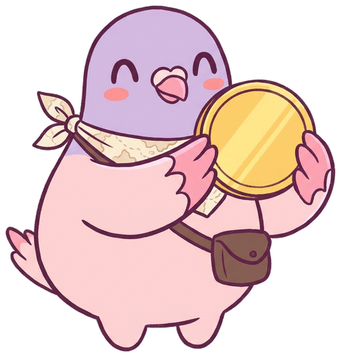
coin · a
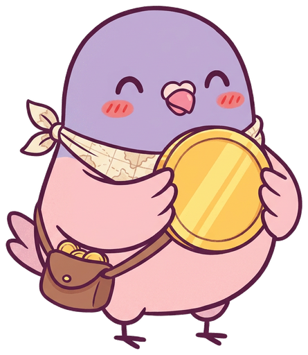
coin · b · pick
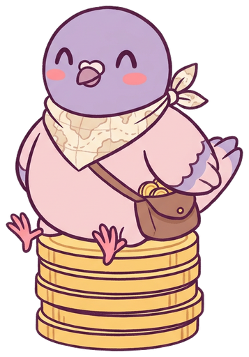
coin-stack · a · pick
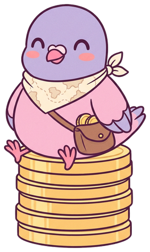
coin-stack · b
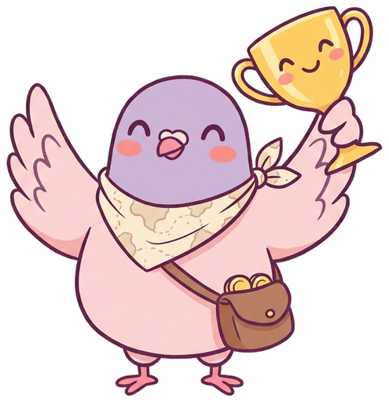
trophy · a · pick
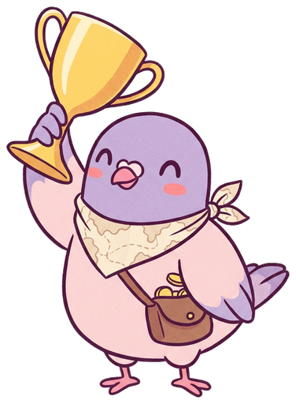
trophy · b
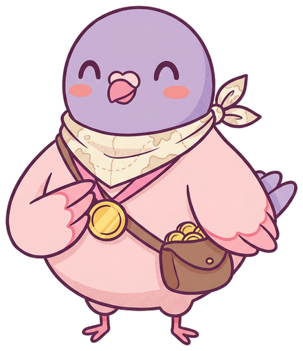
medal · a · pick
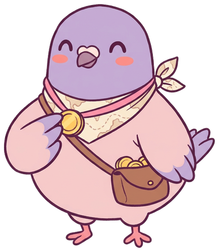
medal · b
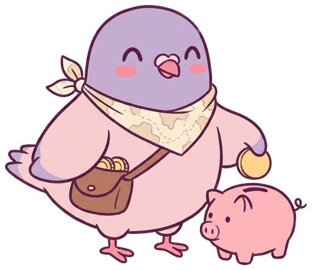
piggy-bank · a
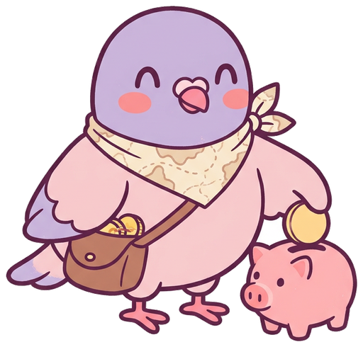
piggy-bank · b · pick
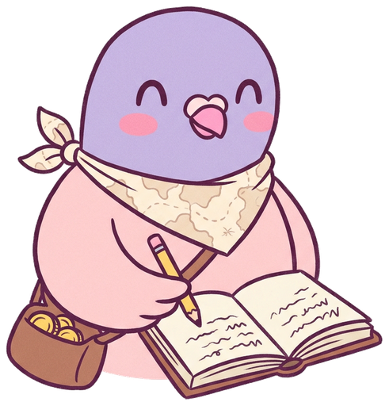
ledger · a · pick
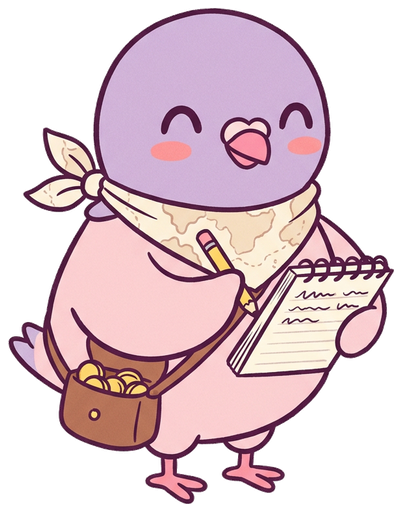
ledger · b
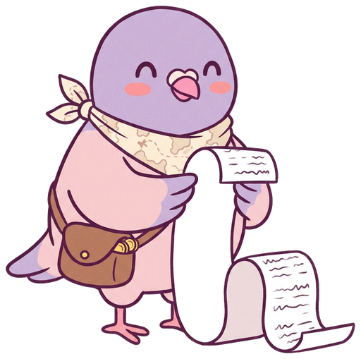
receipt · a · pick
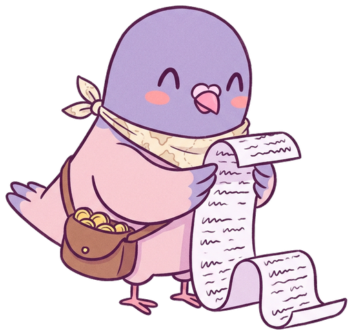
receipt · b
laptop · a · pick
laptop · b
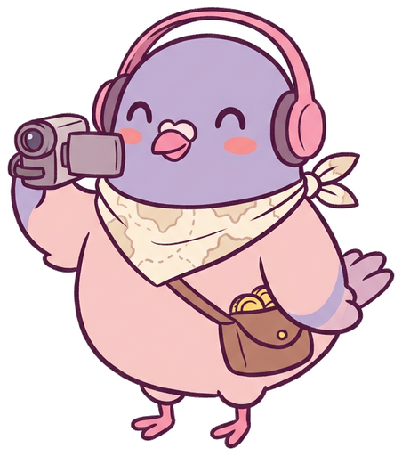
creator · a
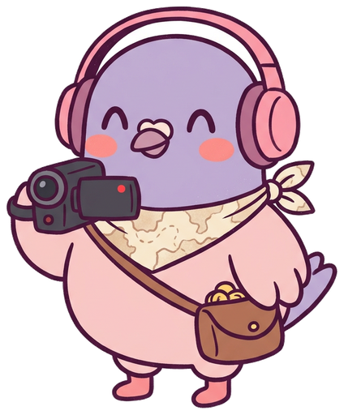
creator · b · pick
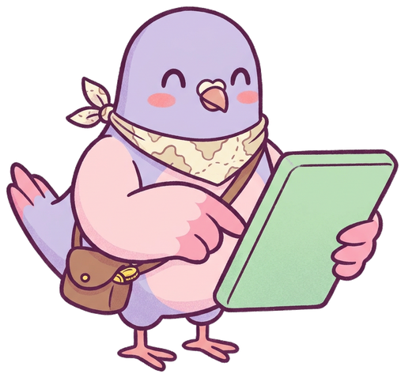
calculator · a
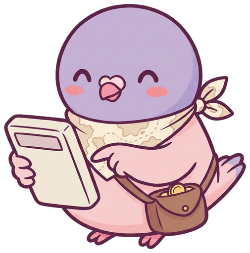
calculator · b · pick
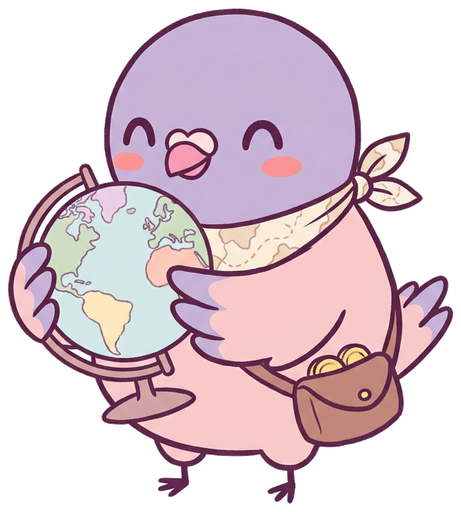
globe · a · pick
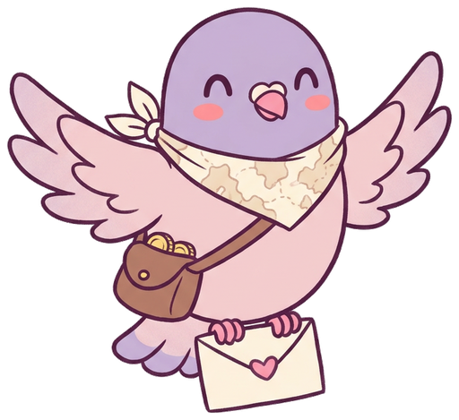
envelope · a · pick
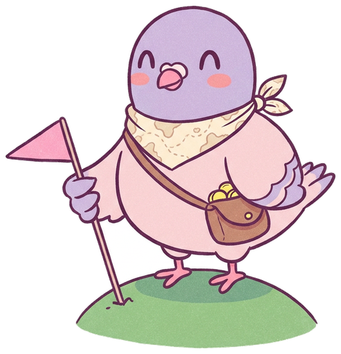
flag · a · pick
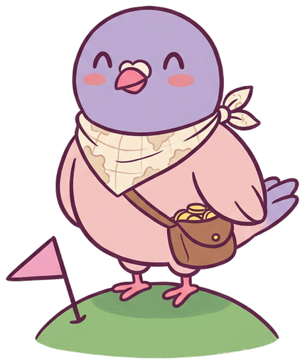
flag · b
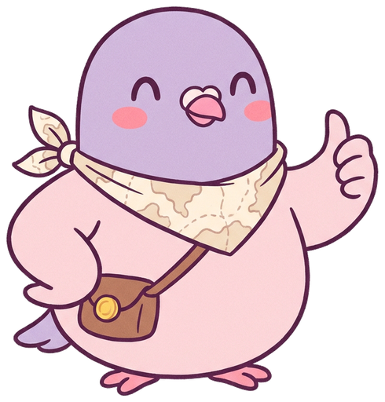
thumbs-up · a · pick
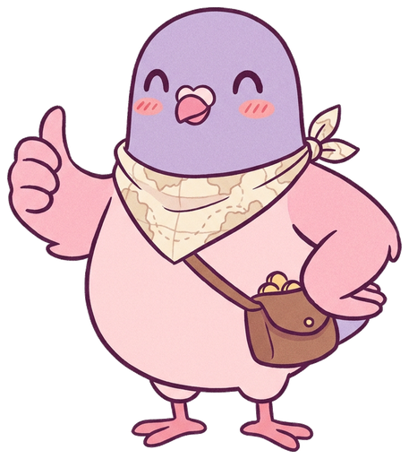
thumbs-up · b
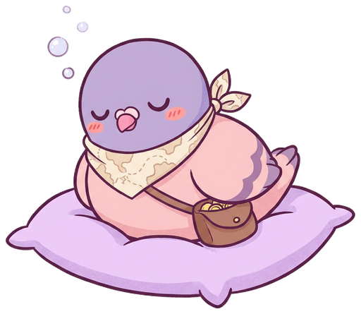
sleeping · a · pick
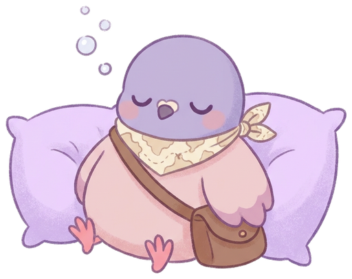
sleeping · b
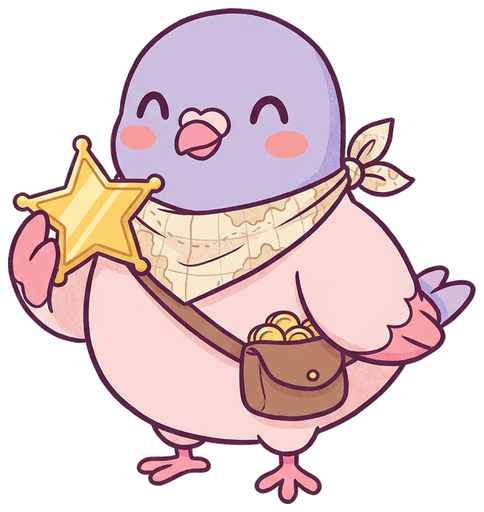
star-badge · a · pick